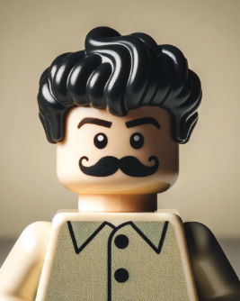

About Me
"With a background in cognitive science from Simon Fraser University, I'm a 28-year-old now based in Mexico City, transitioning into web development. This journey brings a unique perspective shaped by my studies and experiences in different environments.My interests span AI, art, videogames, and software architecture, driving my curiosity in web development. I'm motivated by the potential to solve practical problems through code, combining analytical thinking with creative solutions.Outside of work, I enjoy reading fiction and philosophy, doing outdoor activities, practicing weightlifting, and playing guitar. I approach web development with the same curiosity and dedication I bring to my personal interests, always seeking to learn and improve. I'm eager to apply my skills to new challenges in web development, committed to continuous learning in this dynamic field."

Projects
Take a look at some of the projects I've worked on. Hover over the images or scroll down (on mobile) to read brief descriptions, click on any image to be directed to the project's repository. You can find more of my projects, including collaborative projects, by checking my GitHub profile in the contact section. Also make sure to check the deployed projects, links are inside the projects' descriptions.

Contact me